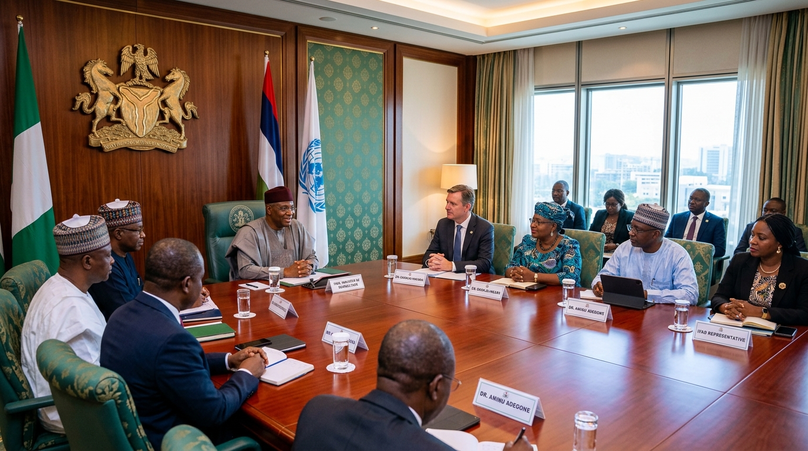
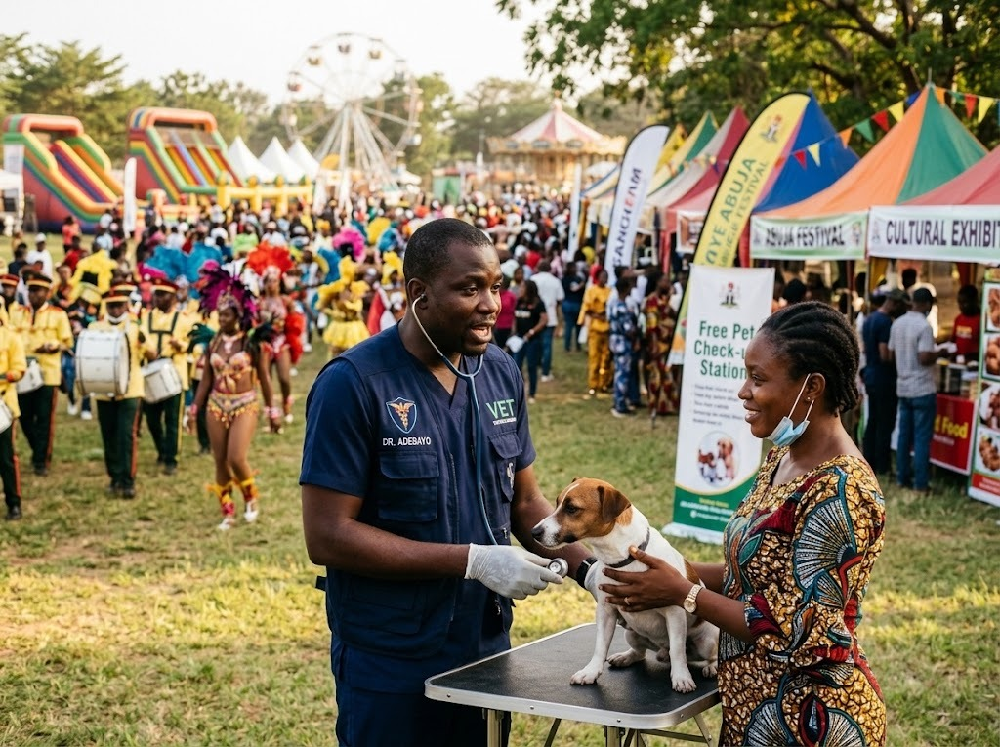
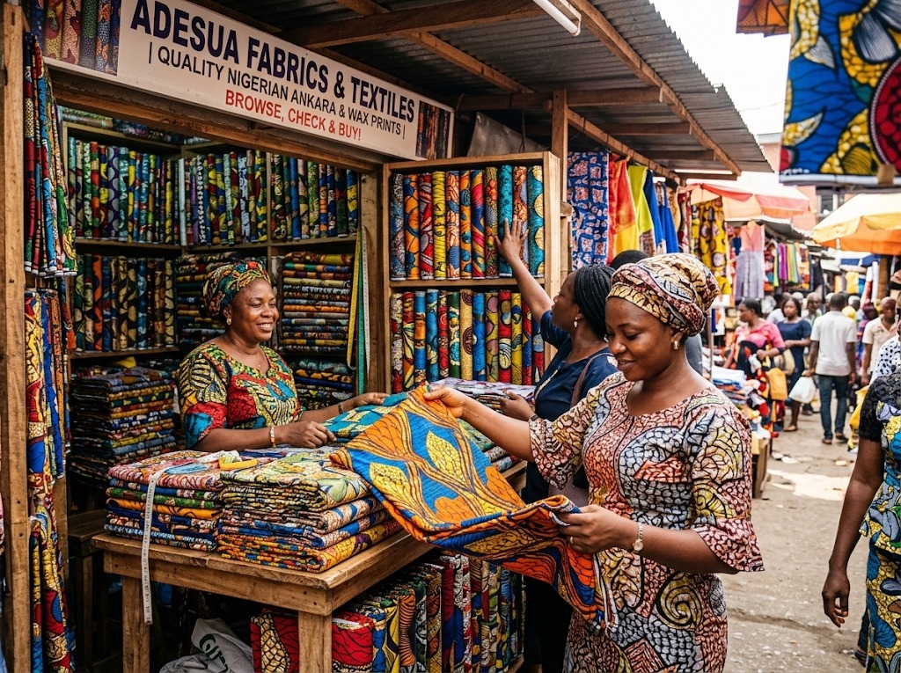

A Presidential Blueprint for Sustainable Livestock Transformation
Uniting federal institutions, state agricultural secretariats, and development financiers to establish Nigeria as West Africa's preeminent livestock and agri-export capital.
The Three Pillars of Renewed Hope Livestock Policy
Addressing historical structural deficits through modern pasture development, animal telematics, and structured institutional credit.
Peacebuilding & Pasture Settlement
Resolving farmer-herder friction permanently by creating dedicated, water-equipped grazing reserves, certified commercial feedlots, and standardized fodder production hubs across transition zones.
- Demarcated grazing corridors
- Solar-powered borehole infrastructure
- Sedentary cooperative ranching models
Quality & Inspection Infrastructure (QII)
Establishing rigorous sanitary and veterinary protocols aligned with international benchmarks to enable seamless global meat exports.
- Biometric RFID cattle ear-tagging
- Continuous -18°C reefer transport
- Standardized modular abattoirs
BOI Single-Digit Financing Facility
Dedicated credit guarantees, concessional equipment leasing for cold vans, and revolving liquidity pools provided through the Bank of Industry for verified commercial pastoralists.
- Concessionary interest rate terms
- 36-month asset financing tenors
- Direct off-taker contract matching
Institutional Co-Host Leadership
Jointly steered by the Federal Government of Nigeria and the National Livestock Strategy Implementation Committee Secretariat.

Federal Government of Nigeria
Mandated by the Presidency to formulate regulatory frameworks, enforce animal disease surveillance, and oversee pastoral modernization nationwide across all livestock categories.

NHESICS Secretariat
Directing Nigeria's integration into the global agri-export ecosystem, standardizing export certification pipelines, and harmonizing cross-border customs bilateral pacts.

Bank of Industry & Trade Partners
Delivering concessionary credit windows, processing plant capitalization, and export insurance backing to commercial livestock cooperatives.
The 2027 Zonal Expansion Roadmap
While the 2026 Pilot is exclusively staged in Abuja at the Old Parade Ground, the roadmap transitions into a synchronized six-zone festival in 2027: